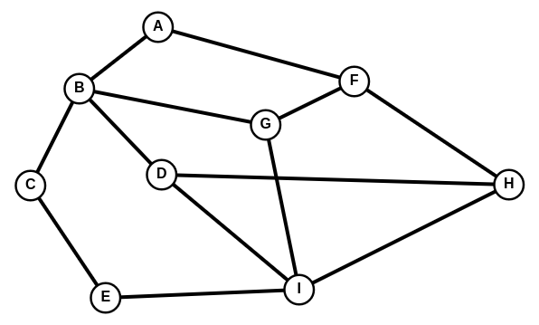

Graphe - Parcours
| Thème : Structure de données |
|---|
| 25 | Les Graphes : Parcours |
|---|
Introduction⚓︎
Un des premiers algorithmes qu'on doit savoir utiliser sur un graphe est celui de son parcours. Parcourir un graphe, c'est visiter ses différents sommets, afin de pouvoir opérer une action tour à tour sur eux.
Les deux algorithmes fondamentaux permettant de parcourir un graphe s'appellent :
-
le parcours en profondeur d'abord ;
-
le parcours en largeur d'abord.
Selon les actions opérées au cours d'un parcours, on peut détecter des cycles dans le graphe, trouver le chemin le plus court entre deux sommets, calculer la distance entre deux sommets, etc.
Les algorithmes sur les graphes sont très utilisés dans la vie courante, ils permettent par exemple :
-
le routage des paquets de données dans un réseau ;
-
de trouver le chemin le plus court entre deux villes (utilisé par les GPS) ;
-
de sortir d'un labyrinthe ;
-
etc.
le parcours en largeur⚓︎
Parcours en largeur : à partir d'un sommet, on explore tous ses voisins (ou successeurs), puis on explore tous les voisins de ces voisins, et ainsi de suite. Le parcours balaie ainsi chaque "branche" au même rythme, d'où le nom de parcours en largeur.
A retenir
Principe de l’algorithme de parcours en largeur :
- On choisit un sommet de départ
- On l’enfile :
- Tant que la file n’est pas vide :
- On défile son premier élément
- S’il n’a pas encore été visité on le marque et on enfile tous ses voisins non encore visités
- Sinon, on ne fait rien (on passe donc directement à l’itération suivante)
Question
A mettre en pratique sur le graphe suivant en partant de A :

Pour visualiser le parcours : Parcours Largeur Graphe 1
Question
A mettre en pratique sur le graphe suivant en partant de A :

Pour visualiser le parcours : Parcours Largeur Graphe 2
Question
Implémentation en Python : A compléter :\ La structure file est implémentée par une liste Python mais on peut bien sûr utiliser n'importe quelle autre implémentation.\ Voici l'implémentation du graphe G1 :
g1=GrapheNoLs(["A","B","C","D","E","F","G"])
g1.ajouter_arete('A','B')
g1.ajouter_arete('A','D')
g1.ajouter_arete('B','C')
g1.ajouter_arete('B','E')
g1.ajouter_arete('D','E')
g1.ajouter_arete('C','E')
g1.ajouter_arete('C','F')
g1.ajouter_arete('C','G')
Voici l'implémentation du graphe G2 :
g2=GrapheNoLs(["A","B","C","D","E","F","G","H","I"])
g2.ajouter_arete('A','B')
g2.ajouter_arete('A','F')
g2.ajouter_arete('B','C')
g2.ajouter_arete('B','D')
g2.ajouter_arete('B','G')
g2.ajouter_arete('C','E')
g2.ajouter_arete('D','H')
g2.ajouter_arete('D','I')
g2.ajouter_arete('E','I')
g2.ajouter_arete('F','G')
g2.ajouter_arete('F','H')
g2.ajouter_arete('G','I')
def parcours_larg(graphe, debut):
visites = []
file = [debut]
while len(file) > 0:
pass
return visites
Parcours en profondeur⚓︎
Parcours en profondeur :
à partir d'un sommet, on explore un de ses voisins (ou successeurs), et ainsi de suite. S'il n'y a plus de voisins, on revient au sommet précédent et on passe à un autre de ses enfants. Cette façon de faire implique que chaque "branche" est explorée jusqu'au bout, avant de revenir sur nos pas, d'où le nom de parcours en profondeur.
A retenir
Principe de l’algorithme de parcours en profondeur :
- On choisit un sommet de départ
- On l’empile
- Tant que la pile n’est pas vide :
- On dépile son sommet
- S’il n’a pas encore été visité on le marque
- on étudie ses voisins :
- si le voisin a déjà été visité, on l’ignore
- si le voisin n’a pas encore été visité, on l’empile et on reprend à l’étape 2
- Sinon, on ne fait rien (on passe donc directement à l’itération suivante)
En stockant les sommets encore à visiter dans une pile, on s'assure que ce sont les derniers sommets découverts qui vont être visités en premier (LIFO, Last In First Out).
Question
A mettre en pratique sur les exemples suivants en partant de A :
Pour visualiser le parcours : Parcours Longueur Graphe1
Pour visualiser le parcours : Parcours Longueur Graphe2

Pour visualiser le parcours : Parcours Longueur Graphe3
Implémentation en Python : A compléter :\ La structure file est implémentée par une liste Python mais on peut bien sûr utiliser n'importe quelle autre implémentation.\ Voici l'implémentation du graphe G1 :
g1=GrapheNoLs(["A","B","C","D","E","F","G"])
g1.ajouter_arete('A','B')
g1.ajouter_arete('A','D')
g1.ajouter_arete('B','C')
g1.ajouter_arete('B','E')
g1.ajouter_arete('D','E')
g1.ajouter_arete('C','E')
g1.ajouter_arete('C','F')
g1.ajouter_arete('C','G')
Voici l'implémentation du graphe G2 :
g2=GrapheNoLs(["A","B","C","D","E","F","G","H","I"])
g2.ajouter_arete('A','B')
g2.ajouter_arete('A','F')
g2.ajouter_arete('B','C')
g2.ajouter_arete('B','D')
g2.ajouter_arete('B','G')
g2.ajouter_arete('C','E')
g2.ajouter_arete('D','H')
g2.ajouter_arete('D','I')
g2.ajouter_arete('E','I')
g2.ajouter_arete('F','G')
g2.ajouter_arete('F','H')
g2.ajouter_arete('G','I')
Voici l'implémentation du graphe G3 :
g3=GrapheNoLs(["A","B","C","D","E","F","G","H","I"])
g3.ajouter_arete('A','B')
g3.ajouter_arete('A','F')
g3.ajouter_arete('B','C')
g3.ajouter_arete('B','D')
g3.ajouter_arete('B','G')
g3.ajouter_arete('C','E')
g3.ajouter_arete('D','H')
g3.ajouter_arete('D','I')
g3.ajouter_arete('E','I')
g3.ajouter_arete('F','G')
g3.ajouter_arete('F','H')
g3.ajouter_arete('G','I')
g3.ajouter_arete('H','I')
def parcours_prof(graphe, visites, s):
"""parcours en profondeur depuis le sommet s"""
if s not in visites:
visites.append(s)
for voisin in graphe.voisins(s):
parcours_prof(..., ..., ...)
return visites
def parcours_prof_rec(graphe, debut):
return parcours_prof(..., ..., ...)
print(parcours_prof_rec(g1,'A'))
print(parcours_prof_rec(g2,'A'))
print(parcours_prof_rec(g3,'A'))